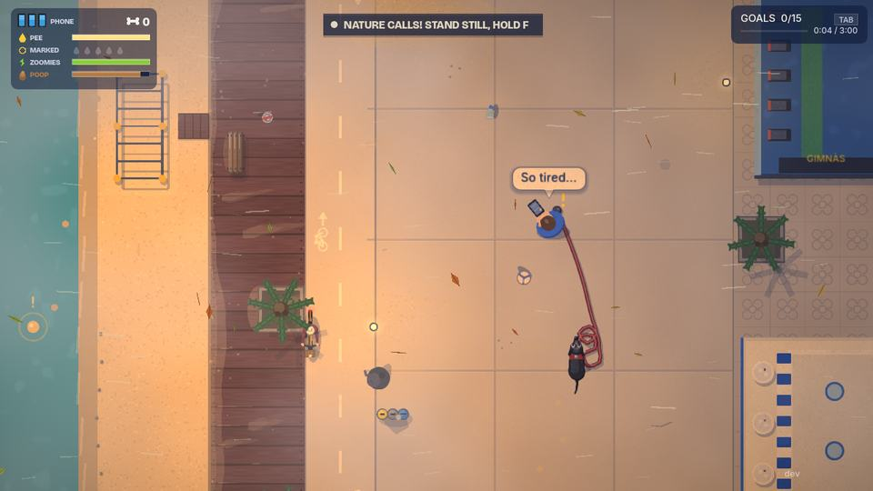
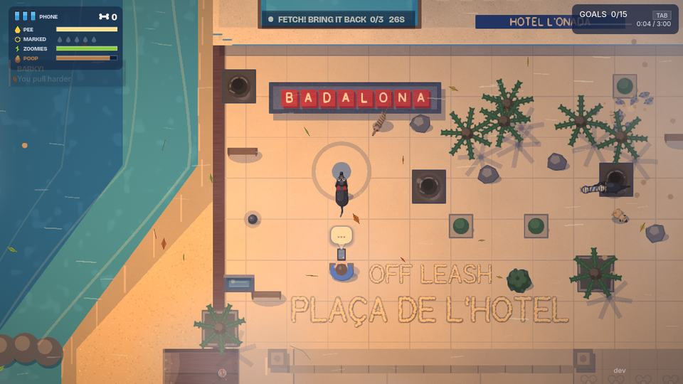

The beachfront promenade
Barceloneta's waterfront promenade at dawn, when coastal wind blows loose sand across the paving toward Plaça de l'Hotel. Palm trees, beach umbrellas and canopies flank the sea before the daytime crowds spread out across the shore.

